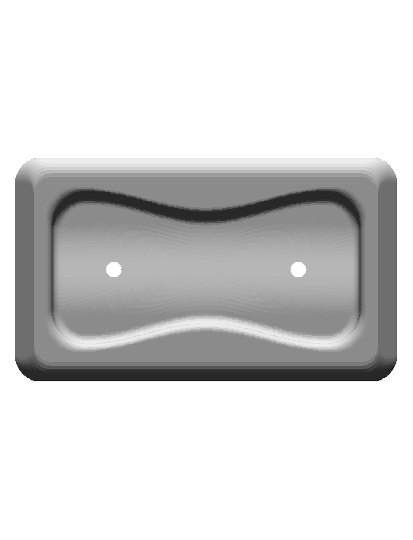
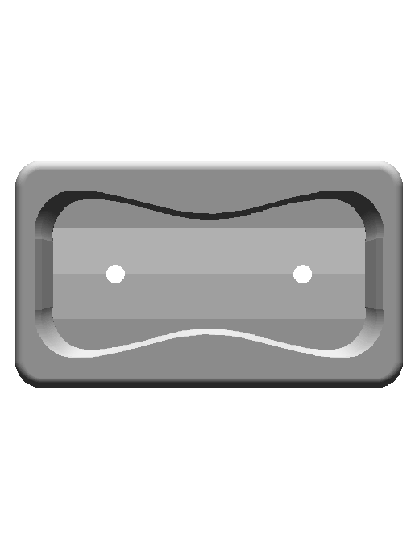
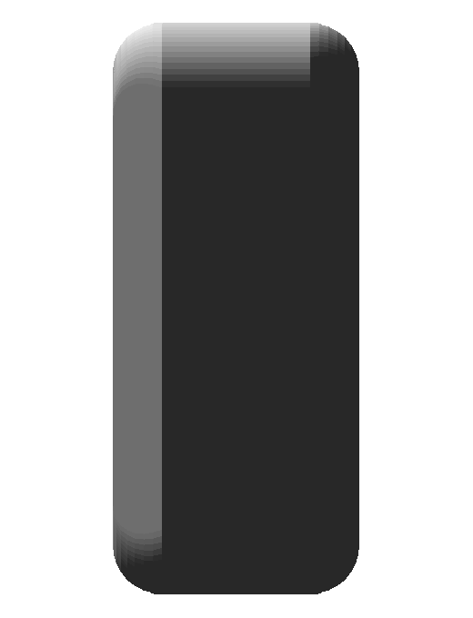
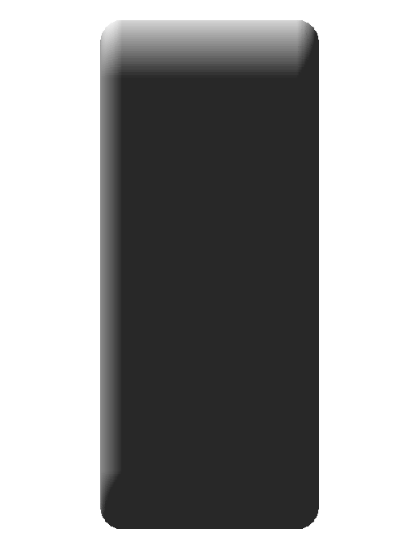
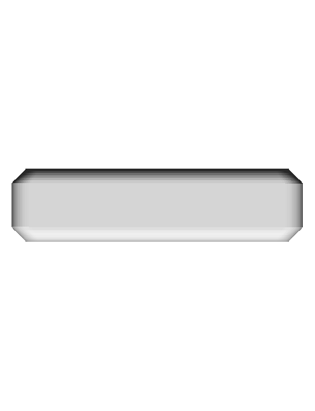

front

front

side

side

top

top

Native rounded body with hourglass pocket and opposing sloped depth floors. Four contact identities and factual metadata are retained.
Prior committed asset d0e4e95191e4a76822815bb4eeef3a32caa6fea0 and final native CAD, with corrected front/side/top viewing order. Native cord generation and subsequent --check pass. Human app review is separate.
| Prior committed asset | Native CAD |
|---|---|
front | front |
side | side |
top | top |
The final solid is CutRightFloorBore. Pocket surfaces are clipped to the native depth-limit solid before being bound as contact regions, preventing buried selectable surfaces. The opposing native floor levels are Y 5 and 10 mm, with intermediate Y 6.7 mm at Z 0. Independent bores are radius 3 mm, X ±29 mm, Z 0, Y 6.7..15 mm. No invisible rear link is inferred. The nominal 20 mm lower lip uses native HangTenGripDepthStart/End witnesses at the lip/floor of the true curved region: native X 0, Y −15→5, Z −17×26/23.5→−17 mm. Its direct distance is 20.082 mm; the Y component is the sourced 20 mm depth. This preserves the real transition rather than flattening the region to make its bounding box equal 20 mm.